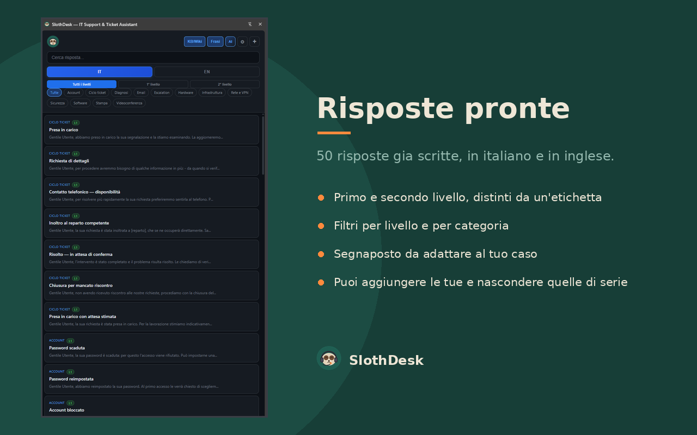

Un'estensione per Chrome pensata per chi passa la giornata sui ticket: la procedura che ti serve, la risposta già scritta e un assistente che compone la mail al posto tuo. Tutto nel pannello laterale, senza cambiare scheda.

Cosa fa
Knowledge base
Voci tecniche su account, email, rete, stampa, dispositivi e sistemi, divise fra primo e secondo livello e cercabili mentre lavori.
Risposte pronte
Testi già scritti in italiano e in inglese, con i segnaposto da adattare. Basta un clic per copiarli.
Frasi ricorrenti
La libreria dei pezzi di testo che riscrivi ogni giorno, sempre a portata di mano.
Assistente AI
Compone la risposta partendo dal testo del ticket, traduce fra italiano e inglese, riformula.
Ci metti i tuoi contenuti
Quello che trovi installandolo è un punto di partenza, non una gabbia. Puoi aggiungere le tue voci e le tue risposte, nascondere quelle predefinite che non ti servono, e mettere il logo della tua azienda o un tuo avatar al posto del bradipo. Con la funzione di backup porti tutto su un altro computer.
Serve una chiave, ed è gratuita
Knowledge base, risposte e frasi funzionano subito, anche senza connessione. Per l'assistente AI serve una chiave Groq, che si ottiene gratuitamente e senza carta di credito su console.groq.com/keys. Al primo avvio l'estensione ti guida passo passo.
La chiave resta nel tuo browser. Le richieste partono dal tuo computer e vanno direttamente a Groq: non esiste alcun server di SlothDesk e chi lo sviluppa non vede nulla di ciò che scrivi. I dettagli sono nell'informativa sulla privacy.
Una cosa da sapere prima di usarlo
Prima di inviare un testo all'AI, SlothDesk maschera automaticamente email, telefoni, codici fiscali, IBAN e partite IVA. I nomi di persona no: te li segnala, ma restano nel testo. È una scelta voluta — riconoscerli in automatico produrrebbe troppi errori — e significa che l'ultima verifica spetta sempre a te.